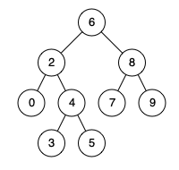

4. Tree
Lowest Common Ancestor of a Binary Search Tree
Problem
Given a binary search tree and two nodes p and q, find their lowest common ancestor.
ExampleInput: root = [6,2,8,0,4,7,9,null,null,3,5], p = 2, q = 8
Output: 6

Approach
Exploit the BST ordering property: starting at the root, if both p and q are smaller, the answer must be in the left subtree; if both are larger, it must be in the right subtree; the moment they split (or one equals the current node), the current node is the lowest common ancestor.
Time O(h)Space O(1)
Java
public TreeNode lowestCommonAncestor(TreeNode root, TreeNode p, TreeNode q) {
TreeNode current = root;
while (current != null) {
if (p.val < current.val && q.val < current.val) {
current = current.left;
} else if (p.val > current.val && q.val > current.val) {
current = current.right;
} else {
return current;
}
}
return null;
}Solved on LeetCode #235.